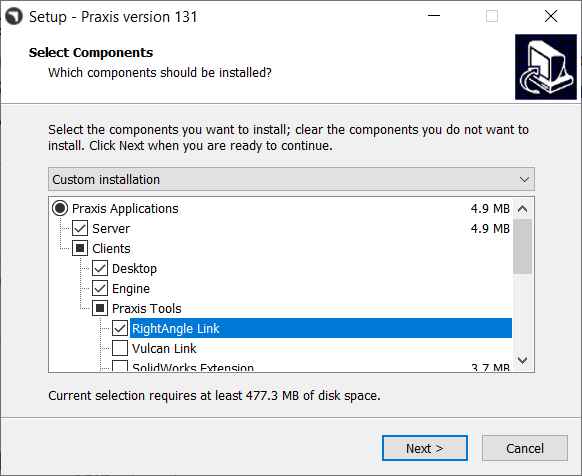
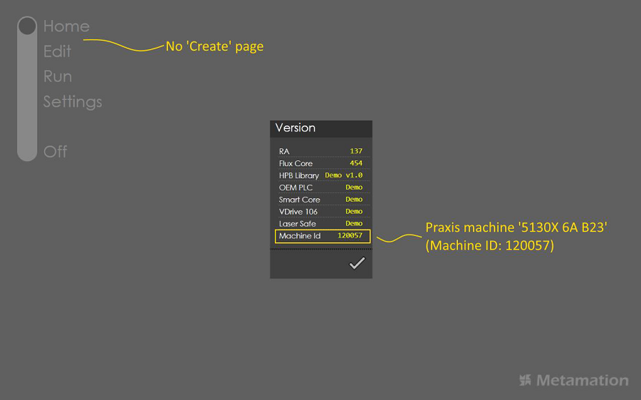

● Download RA setup and install RightAngle standalone first.
● Activate RA (please contact Praxis/RA support team for a RA license) and make sure you can import a sample part (you can find RA samples in C:\ProgramData\Metamation\RA\Samples folder).
● Install Praxis with RightAngle Link.

● Launch Praxis to complete the setup.
● Launch RA and click on the Metamation logo at the bottom-right. Notice the Praxis machine in the Version dialog. Also notice that there is no Create page in the Praxis mode.
